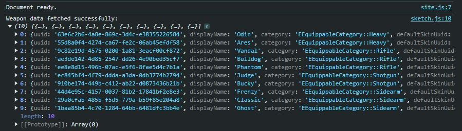
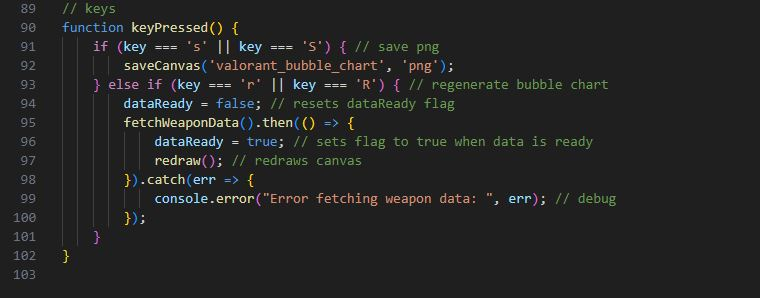

Experiment 7 - Data Visualization & Networks
Use 'S' key to save a png capture.
Use 'R' key to regenerate bubble chart.
Description
This experiment has us experiment with data visualization and apis.
This experiment focuses on taking data from an api and creating a generative design using that data.
The result of this experiment was a bubble chart that takes data of the highest fire rate weapons in Valorant from Valorant-API.
NOTE: some of the weapons have the wrong fire rate on the API as patches for the game over time and alternative fire rates really affect the result.
This is my final result
Technical
Imitate
For this project I took inspiration from the website masterychart.com which has the user input a League of Legends account tag and it will output a bubble chart with all their mastery levels for champions in the game.
I wanted to create something that would take data and put them in a bubble chart like that.
Intergrate
To start this project I first implemented code that would take data from the Valorant-API.
As I'm not used to API's this was a challenge to implement but once I saw the console output the data on my local host server, I was able to move onto the next step.

Now I simply implemented a barebones draw function to create circles of different sizes that would represent the data.
Innovate
The project was pretty much done but I took this chance to make the experiment more complete overall by doing little improvements.
The biggest improvements were a black background for the canvas and I implemented keys to save and regenerate the bubble chart.
I did try to implement alternative data visuals like a bar graph but I wasn't able to figure that out in the limit time.
I do believe the integration in itself is innovation as the reference I was imitating was for League of Legends mastery levels while mine used Valorant's gun statistics and it was my first attempt at an API.

The result turned out amazing as you can see.
.png)
Reflection
This experiment was really challenging as it was my first real attempt at using API's.
Even though I had a hard time getting started despite knowing what I wanted to create, once I took reference from an old group project and used typescript, I was able to take that knowledge and apply it to this experiment.
The old project used yaml and had two typescript files I made with the help of my group mates to create weather scenarios. I took that general knowledge and applied it to Valorant-API.
Understanding how to receive data from the API was the hardest part, after I got that it was all downhill as I just had to assign the data to their respective circle that would be drawn to create the bubble chart.
This project taught me a lot and I'm quite proud of the result.